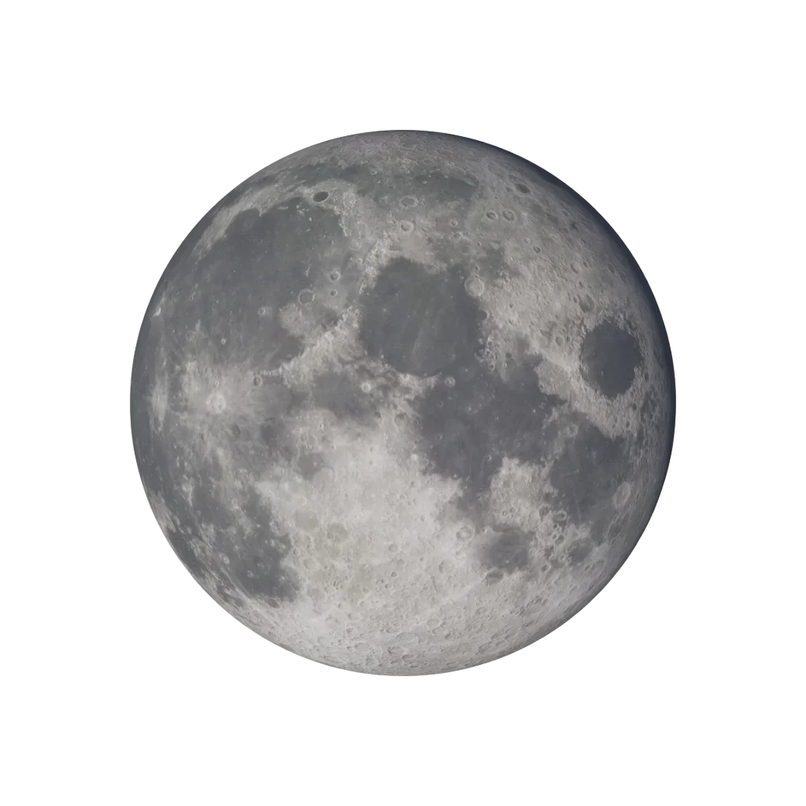

Sign guide · Water · Cardinal
Cancer
June 21 – July 22
“I feel”
- Element
- Water
- Modality
- Cardinal
- Ruler
- The Moon
- Symbol
- The Crab
Cancer in today’s sky
Computed from today’s sky with the same VSOP87 engine as the orrery. Not a live feed.
Today’s Cancer reading is calculated in your browser from real planetary positions. If this text remains, turn on JavaScript to see it, or read the full Cancer guide below.
About Cancer
Cancer is the zodiac's keeper of the inner world — ruled by the Moon, the fastest-moving and most changeable body in the sky. This sign feels everything first and reasons about it later. Beneath the famous protective shell lives the most loyal heart in the zodiac, one that never forgets a kindness and never quite forgets a wound either.
The astronomy of Cancer
The factual layer: where Cancer sits on the ecliptic.
Element, ruler, ecliptic band
the element of feeling — water signs move through emotion, intuition and depth.
the initiating mode — cardinal signs start things and set the season in motion.

the Moon, ruler of emotion, memory and the inner tides.
the Moon · our engine render
Cancer is the 90°–120° band of the zodiac circle. The Sun crosses it around 21 Jun – 22 Jul each year. The exact day shifts by about a day from year to year, which is why the dates are approximate.
Cancer in your chart
Most people meet Cancer as a “star sign”. In a real birth chart it can appear in three very different places, and each one means something distinct.
Sun in Cancer
Your core self: the “Cancer side” people mean when they ask your sign. It shapes your basic character and what makes you feel most yourself.
Moon in Cancer
Your inner, emotional world: how you feel, comfort yourself and respond in private. Two people with a Cancer Moon share an emotional language, whatever their Sun sign.
Rising (Ascendant) in Cancer
How you meet the world: your outward style and first impression. Your Rising is set by the exact time and place you were born, so it needs your birth time to know.
Cancer strengths & challenges
Strengths
- Profound emotional intelligence
- Fierce loyalty to chosen people
- An instinct for what others need
- Tenacity that outlasts the confident
Challenges
- Retreating into the shell instead of speaking
- Moods that colour everything
- Holding onto the past too tightly
- Indirectness when hurt
In life
Love
Cancer loves by caring for people — feeding them, remembering things, building a home around them. This sign needs emotional safety before anything else can happen, and tests for it carefully. A secure Cancer is the warmest partner in the zodiac; an insecure one disappears sideways, like its symbol.
Traditionally a good match with Scorpio, Pisces and Taurus. See two-chart compatibility: Sun signs alone are not the whole story.
Career, friendship, shadow, growth
Career
Cancer excels where care and intuition matter: medicine, psychology, hospitality, teaching, food, real estate, family business. This sign manages people well because it actually notices them. The ideal role offers emotional meaning and a team that feels like kin.
Friendship
A Cancer friend is the one who makes you soup when you are sick and remembers the anniversary of your hard days. This sign builds friendship like a home — slowly, and meant to last — and folds the people it loves into a chosen family. A Cancer notices the small shift in your voice before you have said anything is wrong. In return it asks only to be needed, and to be reassured, now and then, that it has not been forgotten.
Shadow
The Cancer shadow lives in the shell — the part that withdraws instead of speaks, sulks instead of asks, and uses care as a quiet form of control. Old wounds are rehearsed until they calcify; moods become weather everyone else must navigate; the past is clutched so tightly there is no room for the present. The growth edge is direct vulnerability: saying the need out loud rather than testing whether others can guess it.
Growth
The inner path for Cancer is from self-protection to self-trust — learning that the shell was built for a younger, more fragile self and can now be opened by choice. This sign grows by feeling its emotions without being ruled by them, by releasing a past it cannot change, and by mothering itself as tenderly as it mothers everyone else. When Cancer feels safe from the inside, the retreating crab finally stops needing to hide.
Cancer reference
Dates, ruler, FAQ
Cancer at a glance
- Symbol
- The Crab
- Dates
- June 21 – July 22
- Element
- Water
- Modality
- Cardinal
- Ruling planet
- The Moon
- Polarity
- Feminine / Yin
- Body part
- The chest and stomach
- Tarot
- The Chariot
- Keyword
- “I feel”
Frequently asked
What are the Cancer zodiac dates?
Cancer season runs June 21 – July 22. People born in this window have their Sun in Cancer.
What element and ruling planet is Cancer?
Cancer is a Water sign of the Cardinal modality, ruled by The Moon. Its symbol is The Crab.
Which signs are most compatible with Cancer?
Cancer is traditionally most compatible with Scorpio, Pisces, Taurus. Full synastry depends on the complete birth charts of both people, not Sun signs alone.
What are the main Cancer personality traits?
Cancer is known for being profound emotional intelligence, fierce loyalty to chosen people, an instinct for what others need. Its growth edges include retreating into the shell instead of speaking and moods that colour everything. As a Cardinal Water sign ruled by The Moon, Cancer carries the keyword “I feel”.
Is Cancer rare?
No zodiac sign is truly rare: every sign covers about a month, so each accounts for roughly one twelfth of birthdays. Small global birth-rate variations by season make some signs marginally more common than others, but Cancer is no rarer than any other Sun sign. Your full birth chart, however, is genuinely one of a kind.
What is the Cancer symbol and ruling body?
The symbol of Cancer is The Crab, and it is ruled by The Moon. Its polarity is feminine / yin, it is traditionally associated with the chest and stomach, and its corresponding tarot card is The Chariot.
Every sign
Tap a tile to open that sign’s guide and today’s sky.